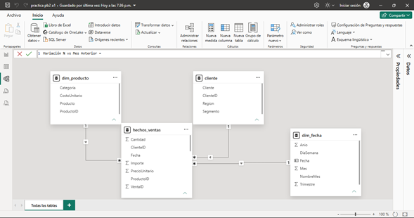
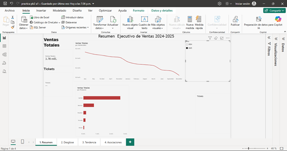
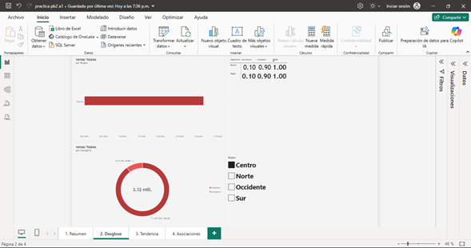
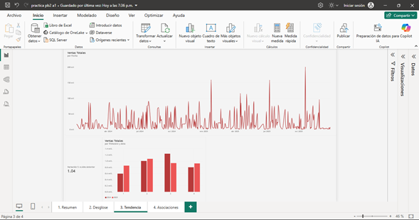
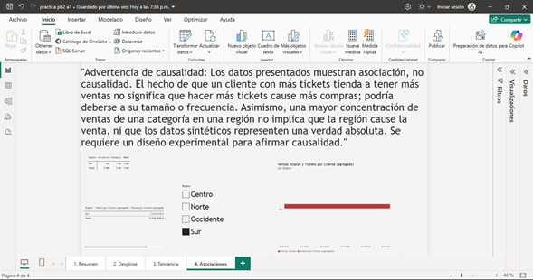

Curso: Práctica Integradora | Autor: Brandon | Grupo: Único | Fecha: Noviembre 2026
Decisión organizacional: Identificar qué categorías de producto y segmentos de cliente concentran las ventas para priorizar esfuerzos comerciales y de inventario en 2026.
Usuario del tablero: Gerente comercial y equipo de planificación de ventas.
Se cargaron los archivos CSV. Se cambiaron los tipos de datos (fechas y números), se eliminaron columnas innecesarias y se documentaron los nulos para asegurar la calidad de la información.

Ventas Totales: SUM del Importe.Tickets: DISTINCTCOUNT de VentaID.Ticket Promedio: DIVIDE(Ventas Totales, Tickets).Variación % vs Año Anterior: Inteligencia de tiempo (SAMEPERIODLASTYEAR).% Ventas por Categoria: DIVIDE con ALL.



Correlación Numérica: Al analizar la relación entre los tickets por cliente y las ventas por cliente, se observa una asociación positiva (a mayor cantidad de transacciones, mayor suele ser el ingreso generado por el cliente).
Correlación Categórica: La matriz de región vs categoría muestra que ciertas categorías (como Cómputo) tienen una mayor participación en regiones específicas (como Centro).
Los análisis presentados muestran asociación entre variables, no causalidad. Que un cliente con más tickets tenga mayores ventas no implica que aumentar los tickets cause más ventas. Los datos son sintéticos y observacionales, no provienen de un experimento controlado. No se puede afirmar causalidad sin un diseño experimental riguroso.